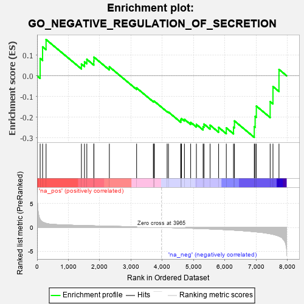
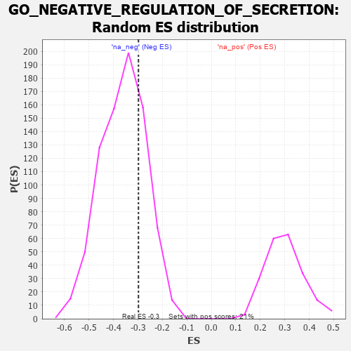

| | | Dataset | 7d |
| Phenotype | NoPhenotypeAvailable |
| Upregulated in class | na_neg |
| GeneSet | GO_NEGATIVE_REGULATION_OF_SECRETION |
| Enrichment Score (ES) | -0.29796955 |
| Normalized Enrichment Score (NES) | -0.8263824 |
| Nominal p-value | 0.7392405 |
| FDR q-value | 0.9840455 |
| FWER p-Value | 1.0 |
Table: GSEA Results Summary

Fig 1: Enrichment plot: GO_NEGATIVE_REGULATION_OF_SECRETION
Profile of the Running ES Score & Positions of GeneSet Members on the Rank Ordered List
| PROBE | GENE SYMBOL | GENE_TITLE | RANK IN GENE LIST | RANK METRIC SCORE | RUNNING ES | CORE ENRICHMENT | | 1 | IRS1 | | | 98 | 1.659 | 0.0840 | No |
| 2 | FOXF1 | | | 176 | 1.136 | 0.1403 | No |
| 3 | DPH3 | | | 287 | 0.844 | 0.1755 | No |
| 4 | P2RY1 | | | 1416 | 0.407 | 0.0571 | No |
| 5 | INHBB | | | 1514 | 0.388 | 0.0674 | No |
| 6 | ERP29 | | | 1589 | 0.376 | 0.0799 | No |
| 7 | ABR | | | 1812 | 0.335 | 0.0714 | No |
| 8 | FMR1 | | | 1816 | 0.334 | 0.0904 | No |
| 9 | REST | | | 2308 | 0.259 | 0.0436 | No |
| 10 | PSMD9 | | | 3179 | 0.125 | -0.0587 | No |
| 11 | NF1 | | | 3713 | 0.040 | -0.1235 | No |
| 12 | SYT11 | | | 3732 | 0.036 | -0.1237 | No |
| 13 | HTR1B | | | 3745 | 0.035 | -0.1232 | No |
| 14 | WNK3 | | | 4153 | -0.034 | -0.1725 | No |
| 15 | ENY2 | | | 4195 | -0.041 | -0.1753 | No |
| 16 | SYT4 | | | 4590 | -0.116 | -0.2182 | No |
| 17 | PNKD | | | 4591 | -0.116 | -0.2114 | No |
| 18 | ADTRP | | | 4612 | -0.120 | -0.2070 | No |
| 19 | RAP1B | | | 4706 | -0.140 | -0.2105 | No |
| 20 | VAMP8 | | | 4905 | -0.179 | -0.2251 | No |
| 21 | DRD2 | | | 5088 | -0.221 | -0.2351 | No |
| 22 | RAB7A | | | 5302 | -0.271 | -0.2462 | No |
| 23 | NPY2R | | | 5331 | -0.281 | -0.2335 | No |
| 24 | TRIM9 | | | 5526 | -0.327 | -0.2389 | No |
| 25 | ADA | | | 5798 | -0.405 | -0.2495 | No |
| 26 | VAMP3 | | | 6043 | -0.487 | -0.2520 | Yes |
| 27 | STK39 | | | 6274 | -0.563 | -0.2483 | Yes |
| 28 | SYTL4 | | | 6304 | -0.578 | -0.2184 | Yes |
| 29 | GHSR | | | 6937 | -0.894 | -0.2460 | Yes |
| 30 | PIM3 | | | 6964 | -0.914 | -0.1962 | Yes |
| 31 | CCR2 | | | 7003 | -0.939 | -0.1464 | Yes |
| 32 | KCNB1 | | | 7444 | -1.327 | -0.1248 | Yes |
| 33 | CD22 | | | 7534 | -1.449 | -0.0518 | Yes |
| 34 | ASIC1 | | | 7726 | -1.838 | 0.0309 | Yes |
Table: GSEA details [plain text format]

Fig 2: GO_NEGATIVE_REGULATION_OF_SECRETION: Random ES distribution
Gene set null distribution of ES for GO_NEGATIVE_REGULATION_OF_SECRETION